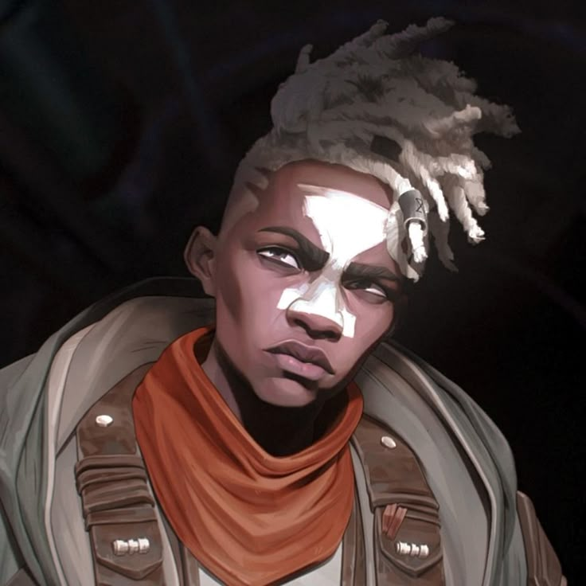

Who is Ekko?
Ekko's Description:
A prodigy from the rough streets of Zaun, Ekko is able to manipulate time to twist any situation to his advantage. He uses his own invention, the Z-Drive, to explore the branching possibilities of reality, crafting the perfect moment to seemingly achieve the impossible the first time, every time. Though Ekko revels in this freedom, when there's a threat to those he cares about, he and the Firelights will do anything to defend them.
Ekko's Weapons/Utilities:
- Zero-Drive (Z-Drive)
- Giant Clock's Hour Hand
- Timewindering Disc
Ekko's Abilities:
- Z-Drive Resonance (Passive)
- Time Winder
- Parallel Convergence
- Phase Dive
- Chronobreak (Ultimate)
Every third attack or damaging spell on the same target deals bonus magic damage, and grants Ekko a burst of speed if the target is a champion.
Ekko throws a temporal grenade that expands into a time-distortion field upon hitting an enemy slowing and damaging anyone caught inside. After a delay, the grenade rewinds back to Ekko, dealing damage on its return.
Ekko's basic attacks deal bonus magic damage to low health enemies. He can cast Parallel Convergence to split the timeline, creating an anomaly after a few seconds that slows enemies caught inside. If Ekko enters the anomaly, he gains shielding and stuns enemies by suspending them in time.
Ekko rolls evasively while charging up his Z-Drive. His next attack deals bonus damage and warps reality, teleporting him to his target.
Ekko shatters his timeline, becoming untargetable and rewinding to a more favorable point in time. He returns to whenever he was a few seconds ago, and heals for a percentage of the damage received in that duration. Enemies near his arrival zone take massive damage.